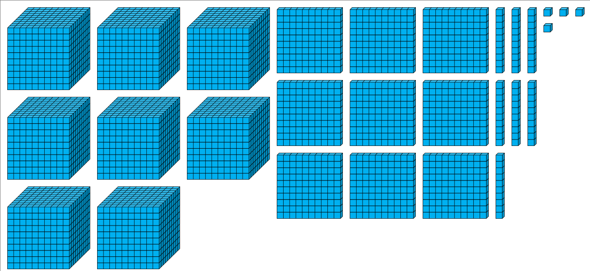
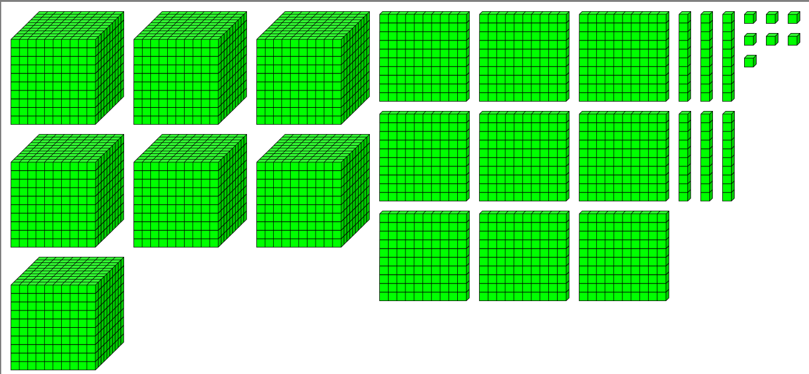
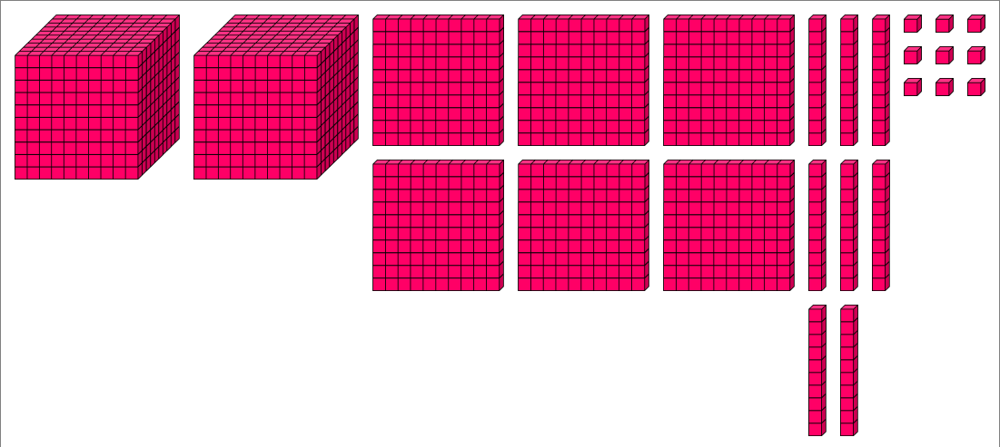

Représentation visuelle des nombres
RepreZ est une application éducative qui permet de visualiser les nombres de 0 à 9999 à l'aide de blocs représentant les milliers, centaines, dizaines et unités. Cette méthode de représentation visuelle est particulièrement efficace pour l'apprentissage du système décimal et de la numération de position.
Développée en Java, cette application offre une interface interactive permettant aux enseignants et aux élèves de générer, représenter et capturer des représentations visuelles de nombres.
Fonctionnalités
Représentation par blocs
Visualisez les nombres sous forme de blocs colorés représentant les milliers, centaines, dizaines et unités pour une meilleure compréhension de la valeur positionnelle.
Génération aléatoire
Générez des nombres aléatoires dans un intervalle défini pour créer rapidement des exercices variés.
Capture d'écran intégrée
Capturez automatiquement les représentations pour créer des fiches d'exercices ou du matériel pédagogique.
Personnalisation des couleurs
Choisissez parmi 9 schémas de couleurs différents pour adapter la représentation visuelle à vos besoins pédagogiques.
Mode plein écran
Utilisez le mode plein écran pour une meilleure présentation lors de démonstrations en classe.
Génération automatique
Créez rapidement un ensemble de représentations à l'aide de la fonction de capture automatique.
Captures d'écran



Comment utiliser RepreZ
Représentation simple
1. Saisissez un nombre entre 0 et 9999 dans le champ de texte
2. Cliquez sur "Représenter" pour visualiser le nombre
3. Utilisez "Capturer" pour enregistrer l'image dans le dossier des captures
Génération aléatoire
1. Définissez les valeurs minimale et maximale pour l'intervalle
2. Cliquez sur "Générer" pour obtenir un nombre aléatoire dans cet intervalle
3. Le nombre est automatiquement représenté visuellement
Capture automatique
1. Cochez "Capture auto" en haut de l'interface
2. Indiquez le nombre de captures souhaitées
3. Définissez l'intervalle min/max
4. Cliquez sur "Générer" pour lancer la génération et la capture automatique
Téléchargez RepreZ 2.0
Application Windows prête à l'emploi
Version actuelle : 2.0
Télécharger RepreZ (Windows)RepreZ est un projet open source sous licence MIT
Voir sur GitHubContactez-nous
Vous avez des questions, des suggestions ou besoin d'assistance? N'hésitez pas à nous contacter via les canaux suivants:
Contactez-nous directement par WhatsApp pour une réponse rapide à vos questions.
Contacter via WhatsAppSuivez-nous sur Facebook pour les dernières actualités, tutoriels et mises à jour.
Suivre sur Facebook